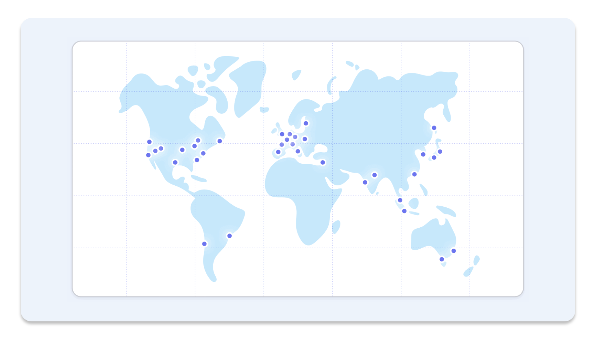
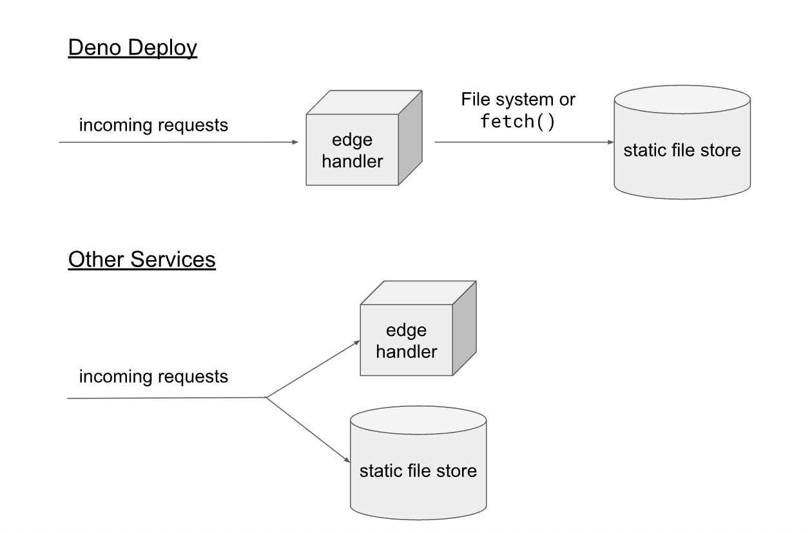
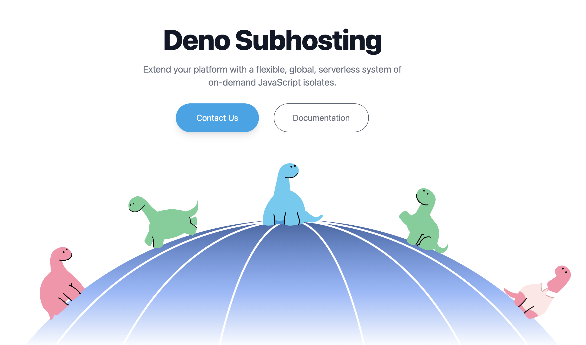
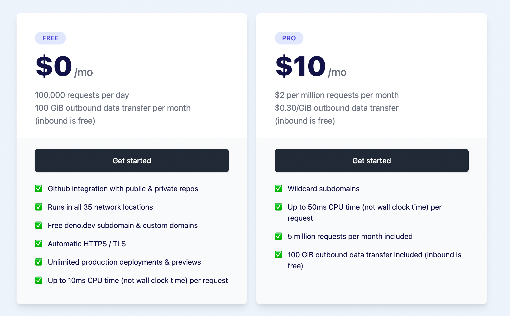

class: middle, center <p style="margin-left: -100px"> </p> 日野澤歓也 @ Deno Land Inc. --- <img src="./assets/hinosawa.jpg" align="right" width="280" /> ## スピーカー - 日野澤 歓也 (ひのさわよしや) - twitter @kt3k Deno 社コアメンバー (2021 -) - Deno の Node.js 互換機能の開発 - Deno Deploy フロントエンドの開発 --- class: inverse, center, middle <p style="margin-left: -100px"> </p> --- # Deno Deploy - いわゆるサーバーレスホスティングサービス - JavaScript、TypeScript、Wasm をサポート - API は Web 互換 API + Deno 互換 API --- # Deno Deploy - [世界35リージョン](https://deno.com/deploy/docs/regions)に自動配信、[Anycast 技術](https://ja.wikipedia.org/wiki/%E3%82%A8%E3%83%8B%E3%83%BC%E3%82%AD%E3%83%A3%E3%82%B9%E3%83%88)で一番近いリージョンに自動的にルーティングされる - コールドスタートは Tokyo は 170ms 程度 (EU, US, ASIA は大体この前後の数値) <p class="text-center"> <a href="https://deno.com/deploy/docs/regions"></a> </p> --- # Deno Deploy で出来ること - HTTP リクエストのサーブ -- - 外向き HTTP リクエスト (`fetch`) -- - 外向き TCP コネクション (`Deno.connect`) - mysql, postgres, redis, etc と直接通信可 -- - WebSocket のサーブ -- - 外向き WebSocket 接続 --- # Deno Deploy で出来ること 静的ファイルの配信 -- - プロジェクトに任意の量の静的ファイルをバンドルすることが出来る - (今の所データ量の制限は無し) -- - `Deno.readFile` API でそれらのファイルを読み込み可能 - 内部的には Cloud Storage へのネットワークアクセスに読み替えられる <!-- - ファイル読み込み - Storage バックエンドへのネットワークアクセスに読み替えられる - ただし tcp proxy のような使い方は NG ❌ --> --- Deno Deploy の静的ファイル配信 <p class="text-center">  </p> -- <small>詳細は[ブログポスト](https://deno.com/blog/deploy-static-files)参照</small> --- class: middle center inverse # Deno Deploy の中身 --- class: middle center inverse よくある誤解 --- class: middle center inverse Deno Deploy って Cloudflare Workers で動いてるんでしょ? --- class: middle center inverse A. 違います --- # Deno Deploy の中身 - Rust 製のカスタムランタイム - OSS の Deno のコア部分は rusty_v8 / deno_core という crate として切り出されている - それらの crate を再利用する形でスクラッチから作られた runtime --- ## 余談: [deno_core](https://crates.io/crates/deno_core) - deno_core はカスタムな JS runtime を作るためのインフラ、応用例: - [chiselstrike](https://chiselstrike.com/) (ORM) - [astrodon](https://github.com/astrodon/astrodon) (デスクトップアプリフレームワーク) - [aurea](https://aurae.io/) (システムデーモン管理システム) -- Deno Deploy はこの deno_core インフラを応用した JS runtime の一つと見ることが出来る --- # Deno Deploy の中身 -- - Deploy の runtime を Linux VM に載せてデプロイしている -- - Kubernetes で VM のスケーリングを管理 --- class: middle center inverse Deno Deploy はどういう使い方をして欲しいか --- ## Deno Deploy 推奨する使い方 -- - プロクシなどの用途も良いですが・・・ -- - アプリケーションを直接デプロイして欲しい -- - (言い換えると) Edge as origin な使い方をして欲しい --- class: middle center inverse Deno Deploy の<br />Edge as origin な使い方を支える<br />フレームワーク --- # [Fresh](https://fresh.deno.dev/) - Deno 公式フレームワーク - Next.js に似た構成 - ファイルベースルーティング - SSR サポート - Preact ベース -- - 実績多数 (後述) --- # [Aleph](https://alephjs.org/) - Next.js / Remix に似た構成 - SSR サポート - React サポート -- - Vue サポート(!) -- - Yew サポート(!) (<- Rust で書ける React) -- - 実績あり (Deno Deploy 自体のダッシュボードなど) --- ## その他のフレームワーク - [Ultra](https://github.com/exhibitionist-digital/ultra) - Next.js のレイヤーをカバー - [Oak](https://github.com/oakserver/oak) - Deno 界で一番古くからあるフレームワーク - Express のレイヤーをカバー - [Hono](https://hono.dev/) - Bun, CF workers などでも動く - Express のレイヤーをカバー --- class: middle center inverse 事例 --- ## Deno Deploy 活用事例 https://deno.land/ - Deno の公式ホームページ - 3rd パーティレジストリ、マニュアルなどを含んだ結構大きいサイト - Fresh 製、[オープンソース](https://github.com/denoland/dotland) - 8M req / day, 100+GB / day --- ## Deno Deploy 活用事例 - Deno Merch (Deno 公式グッズショップ) - Fresh 製、[オープンソース](https://github.com/denoland/merch) - Shopify API 連携 - [Fresh showcase](https://fresh.deno.dev/showcase) に50件程の利用例あり --- ## Deno Deploy 活用事例 他社の Edge worker -- - [Netlify Edge Functions](https://docs.netlify.com/edge-functions/overview/) -- - [Supabase Edge Functions](https://supabase.com/docs/guides/functions) -- <small>これらは内部的には Deno Deploy で動いている</small> -- <small>実際、Netlify Edge Function からのリクエストは Deno Deploy 全体のリクエストのかなり(50%以上)の割合を占めている</small> -- <small>実はこれらの製品は Deno Deploy の通常とは違うモードを使って実装されています</small> --- <p style="margin-left: -100px"> <a href="https://deno.com/subhosting">  </a> </p> --- # Deno Subhosting - Deno Deploy をバックエンドとして、自社の Edge worker サービスとして再販出来る仕組み -- - エンタープライズ向け -- - ランタイムは Deno Deploy そのもの。ユーザーのソースコードを任意に編集することで、自社製品との親和性が高い Edge worker 作ることが出来る -- 使いたい方(法人)は deploy@deno.com まで --- # Deno Deploy の開発環境 - Deno Deploy の API は OSS の Deno のサブセットになっている -- - Deploy で動くものは Deno で動く -- - OSS の Deno 自体が Deploy の開発環境 --- ## Deno Deploy はベンダーロックイン? -- - Deno Deploy の API は OSS の Deno のサブセットになっている -- - Deploy で動くものは Deno で動く -- - Deploy 用に書いたアプリケーションはそのまま OSS の Deno でセルフホストできる -- - <span style="text-decoration: underline">ベンダーロックインではない</span> --- # Pricing <p class="text-center"> <a href="https://deno.com/deploy/pricing">  </a> </p> --- class: middle, center 以上、ご清聴ありがとうございました <img src="./assets/deno_logo_3.svg" align="center" width="300" /> https://deno.com/deploy
loading...